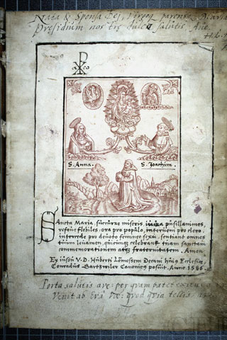
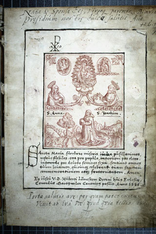

Antiphonar

 



Titel: Antiphonar
Entstehungszeit: um 1310
Entstehungsort: Köln
Hauptsprache: Lateinisch
Bemerkungen zum Zustand: Ab Fol. 293 Nachträge des 15. / 16. Jh.s (Antiphonen);
zwischen Folgenden Bll. Papierbll.
verschiedenen Formats mit nachgetragenen Antiphonen zwischengeh.: Fol. 68+69,
196+197, 267+268, 282+283, 292+293, 332+333.
Beschreibstoff - Zusatz: Pergament
Incipit: Gaude maria virgo cunctas hereses...
Explicit: ...de s(an)c(t)is Marco, Sergio et c(eterae) in locis suis adde(n)dae
sunt.
Überblicksbeschreibung:
Zwei Antiphonare In der Dombibliothek befinden sich zwei Antiphonare für das Chorgebet, die bisher
unter zwei unterschiedlichen Provenienzen erfaßt waren (Dom Hs.263: Dom; Diözesan Hs.149: St. Maria
ad Gradus). Stilistische Ähnlichkeiten bemerkte schon Paul Heusgen (1933, S. 24) . Beim
detaillierten Vergleich zeigt sich, daß beide Handschriften nicht nur in demselben Skriptorium
gefertigt wurden, sondern darüber hinaus in Inhalt, Bildprogramm und Ergänzungen weitgehend
übereinstimmen. Beide Antiphonare umfassen nur den Sommerteil des Kirchenjahres von Pfingsten bis
zum 25. Sonntag nach Pfingsten. Sie müssen im Wechsel mit zwei heute nicht mehr nachweisbaren oder
noch nicht identifizierten Winter-Bänden im Dom für den Offiziumsgesang gedient haben: In beiden
Handschriften ist das Formular für die Kirchweihe innerhalb der Heiligenfeste am Weihetag des Kölner
Domes zwischen den Festen des hl. Mauritius und des Erzengels Michael plaziert (Dom Hs.263, 168v;
Diözesan Hs.149, 155r ). Die Hochfeste des Kirchenjahres (Pfingsten, Trinitatis, Fest der hll.
Petrus und Paulus, Mariä Himmelfahrt) sind mit historisierten Initialen hervorgehoben, die auf den
Anlaß des Festes verweisen, während Jakobs Traum von der Himmelsleiter das Fest der Domweihe
markiert. In Diözesan Hs.149 wurde zudem die erste Nocturn des Allerheiligenfestes durch eine
historisierte Initiale mit dem lehrenden Christus hervorgehoben (vgl. Holladay 1997, S.8). Die
Illustration zum Kirchweihfest ist ungewöhnlich, man würde hier normalerweise die Darstellung einer
Altarweihe erwarten. Vielleicht war dem Initiator des Bildprogramms jedoch eines der Gradualien des
aus Valkenburg bei Maastricht stammenden Buchmalers Johannes von Valkenburg bekannt (Bonn,
Universitäts- und Landesbibl., S384), in dem der Introitus zur Kirchweihe Terribilis est locus iste
(Gen 28,17: Wie ehrfurchtgebietend ist dieser Ort!) in eben dieses Bild umgesetzt ist (vgl. Oliver
1978, S.25). Anders als in den Gradualien war in den Antiphonaren der unmittelbare Textbezug nicht
gegeben. Statt dessen eröffnen die Initialen mit Jakobs Traum nun den Anfang des Responsoriums In
dedicatione templi. Von den illuminierten Initialen gehen am linken Spaltenrand Zierstäbe mit stark
stilisierten Ranken aus, die auf dem Fußsteg von jeweils einem kleinen zweibeinigen Drachen mit
Hasen-, Katzen- oder Hundekopf bevölkert werden. Einmal ist ein spielender Hund dargestellt
(Diözesan Hs.149, 14v). In Diözesan Hs.149 sitzen zudem Vögel auf den oberen Ranken. Es fehlen die
für Johannes von Valkenburg typischen kleinen Goldkugeln auf den Spitzen der wellenförmig
geschnittenen Rankenprofile, weshalb die Schmuckmotive in Dom Hs.263 und Diözesan Hs.149 nur
entfernt an dessen anspruchsvollen Buchschmuck in den Gradualien aus dem Jahr 1299 erinnern (siehe
Diözesan Hs.1b, Kat.Nr.88). Beide Handschriften enthalten im 'Proprium de sanctis' übereinstimmende
Ergänzungen aus dem späteren 14.Jahrhundert. Ein besonders markanter Hinweis auf die gemeinsame
Überarbeitung in einem Skriptorium ist die jeweils von der gleichen Hand ausgeführte
Federzeichnungsinitiale zum Fest des hl. Severin (Dom Hs.263, 362r; Diözesan Hs.149, 340r ). Eine
zweite Ergänzung erfolgte in beiden Codices im letzten Viertel des 15.Jahrhunderts. Zu Dom Hs.263
bemerkte Heusgen (1933), daß dort die "Initialen mit schlichter Ornamentik nach Weidenbach-Malweise"
ausgeführt seien. Aufgrund der Stilanalogien zu den Federzeichnungsinitialen in dem 'Officium
defunctorum' Dom Hs.272 (vgl. Heusgen 1933, S. 27 ), das 1478 von Edmund Huydenroyd,
Regularkanoniker im Kölner Augustiner-Chorherrenkloster Herrenleichnam, zum Gebrauch der Kölner
Domkanoniker geschrieben worden ist, können die Ergänzungen in Dom Hs.263 und Diözesan Hs.149 jedoch
dem Skriptorium dieses Kölner Klosters zugeschrieben werden. Diözesan Hs.149 besitzt noch einen
Anhang ( 364r-373v ) von 1533, dessen Stil tatsächlich auf das Skriptorium der Kölner Fraterherren
verweist (siehe Dom Hs.274, Kat.Nr.102). In beiden Handschriften wurde das Fronleichnamsfest erst im
letzten Viertel des 15.Jahrhunderts nachgetragen (Dom Hs.263, 292r ff.; Diözesan Hs.149, 272r ff. ).
Die Verbreitung dieses in Vergessenheit geratenen Feiertages bewirkten die 1317 veröffentlichen
'Clementinen' (kirchenrechtlichen Bestimmungen) von Papst Johannes XXII. (1316-1334). Für den Dom
wurde das Fronleichnamsfest 1318 von Gottfried und Hadwig Hardevust gestiftet (Kroos 1979/80). Die
erhebliche Zeitdifferenz zwischen Stiftung und Nachtrag wird allgemein mit der Verwendung von
kleinen Heftchen erklärt, die den liturgischen Text des neuen Festes enthielten und in bereits
vorhandene liturgische Bücher eingelegt wurden (vgl. Rubin 1996, S.33f.). Eine Datierung vor 1317/18
resultiert auch aus dem der französisch-flandrischen Buchmalerei verpflichteten Stil der
Initialminiaturen. Er ist in den näheren Umkreis des sogenannten Bibelmeisters einzuordnen, der zu
Beginn des 14.Jahrhunderts (um 1310) die Bibel aus Groß St. Martin (Düsseldorf, Staatsarchiv, Ms. A
5) illuminierte. Der von Gisela Plotzek-Wederhake (1977, S.69ff.) zusammengestellten Gruppe (Dom
Hs.263; Köln, Archiv des Erzbistums Köln, PfA St. Margareta Brühl, 2 B 36; Darmstadt, Hess. Landes-
und Hochschulbibl., Hs.3116) ist Diözesan Hs.149 als ein weiteres Werk aus dem gleichen Skriptorium
hinzuzufügen (vgl. Kirschbaum 1977, S.80; Holladay 1997, S.8). Im Vergleich der unterschiedlichen
Geburtsszenen nimmt die historisierte Initiale in diesem Codex eine Mittelstellung zwischen den fast
identischen Szenen in Dom Hs.263, dem Brühler Antiphonar und der motivisch abweichenden Geburt
Mariens des Darmstädter Antiphonar-Fragments ein. Autor des Textes: Johanna C. Gummlich